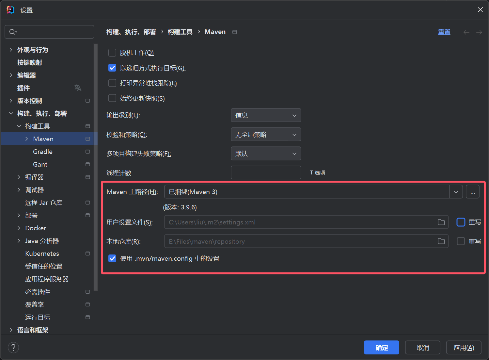

博主 IDE 选用 IntelliJ IDEA 2024.1
# 多 JDK 配置
前往 oracle 官网下载需要 JDK。这里博主考虑到 jdk-8 依然很常用，同时很多项目也有升级的趋势，所以选择 jdk-8 和 jdk-11
参考教程
配置系统环境变量：
- CLASSPATH
.;%java_home%\lib;%java_home%\lib\tools.jar |
- 两个子 JAVA_HOME，一个总 JAVA_HOME
JAVA8_HOME C:\Program Files\Java\jdk-1.8 | |
JAVA11_HOME C:\Program Files\Java\jdk-11 | |
//需要哪个版本就配置哪个，这里使用jdk-11 | |
JAVA_HOME %JAVA11_HOME% |
- 系统 path 中添加路径
%JAVA_HOME%\bin | |
%JAVA_HOME%\jre\bin |
记得删除 path 中 jdk 安装程序自动配置的路径，快捷方式文件也可删，不影响运行：
C:\Program Files (x86)\Common Files\Oracle\Java\java8path | |
C:\Program Files\Common Files\Oracle\Java\javapath |
cmd 运行指令验证：
java -version |
# Tomcat
由于博主有用到 jdk-8，根据 Tomcat 官网，选择版本 Tomcat9
根据教程，安装，注册 Windows 服务，更改编码为 GBK
而后可以新建 Javaweb 项目进行验证
# Maven 配置
这里博主选择使用 idea 捆绑的 maven
# 系统变量
首先打开捆绑的 maven 位置：
E:\study_program\JetBrains\IntelliJ IDEA 2024.1\plugins\maven\lib\maven3 |
windows 搜索高级系统设置，新建系统环境变量 MAVEN_HOME
E:\study_program\JetBrains\IntelliJ IDEA 2024.1\plugins\maven\lib\maven3 |
系统 Path 中新建
%MAVEN_HOME%\bin |
命令窗口运行代码验证：
mvn -v |
# settings.xml 配置文件修改
打开目录：
E:\study_program\JetBrains\IntelliJ IDEA 2024.1\plugins\maven\lib\maven3\conf |
修改 settings.xml
# 仓库位置
避免 jar 包一直存放在 C 盘，localRepository 处加入 maven 仓库位置，以我为例
<localRepository>E:/Files/maven/repository</localRepository> |
# 阿里云镜像仓库
找到 xml 的 mirrors 配置，在里面添加如下
<!-- 阿里云仓库 --> | |
<mirror> | |
<id>alimaven</id> | |
<mirrorOf>*</mirrorOf> | |
<name>aliyun maven</name> | |
<url>http://maven.aliyun.com/nexus/content/repositories/central/</url> | |
</mirror> |
我们上述修改的是全局配置！windows 是多用户操作系统。上述修改可在 idea 设置中查看
而文件 C:\Users\***\.m2\settings.xml 是用户设置！记录当前用户自己的定制（若有），文件可能不存在

# maven 设置完成
之后进入 maven 项目，maven 就会自动去下载依赖到我们设置的本地的仓库
# jar 包安装
这里使用 idea 全局库的方式
首先在任意项目的项目设置中定位到全局库，点击加号新建 Java 库，路径填入包含 jar 包的目录
而后在以后得项目里，只要在模块 - 依赖中点击加号，导入全局库即可使用 jar 包